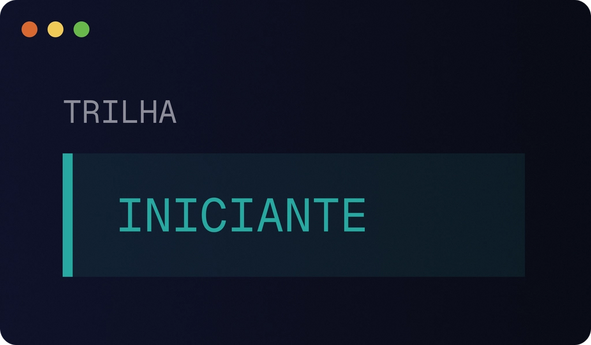
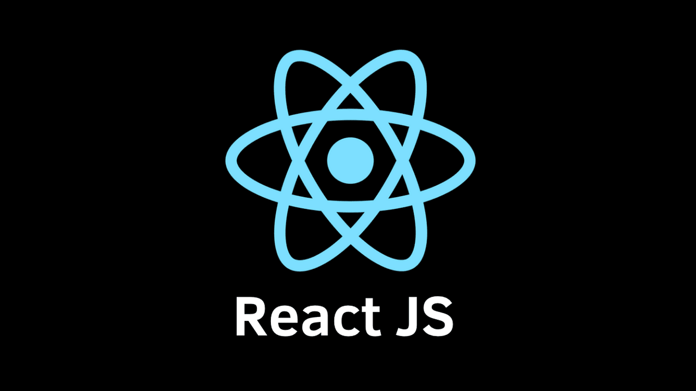
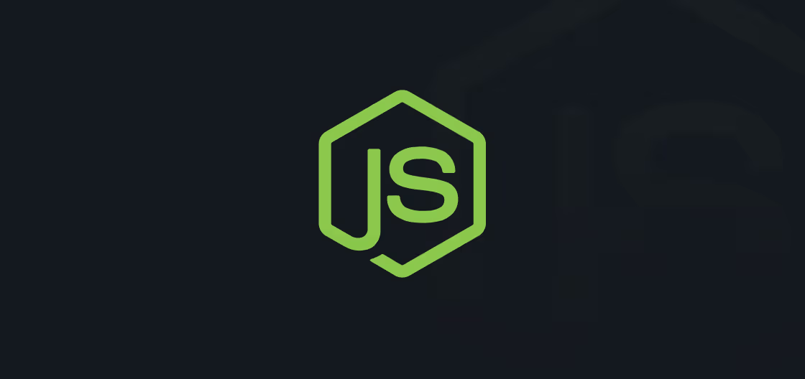
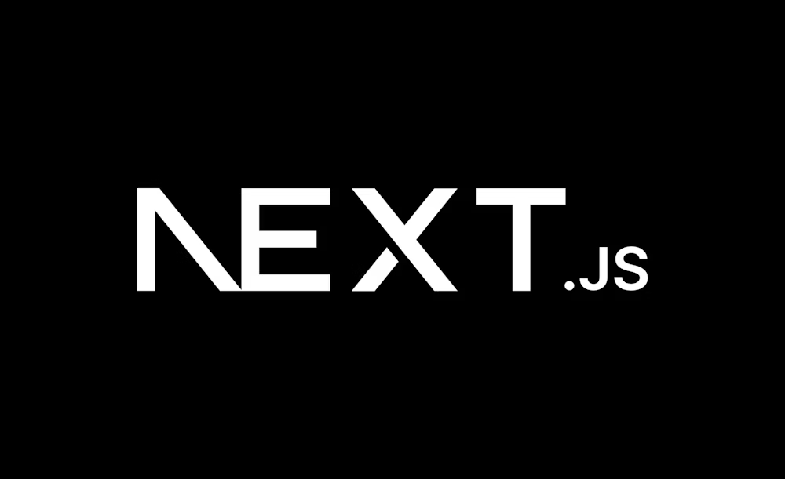
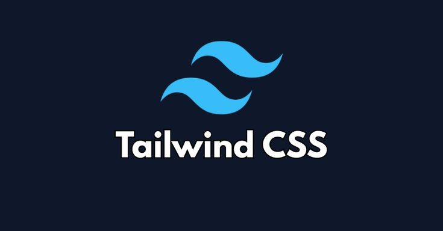

Projetos em Destaque
Explore projetos recentes, ideias inovadoras e soluções criadas com tecnologia.
Trilha iniciante: aprenda a programar com IA

Stack: HTML, CSS, JavaScript
Descrição: Você vai aprender fundamentos de programação enquanto constrói um projeto funcional com HTML, CSS (Tailwind), JavaScript, Gemini API e Cloudinary, passo a passo.
Ver projetoWorkflows agênticos

Stack: React, Next.js, tRPC, Node.js
Descrição: Domine a estruturação de workflows agênticos e o uso de IA em modo agente para decisões arquiteturais e implementação. Crie sub-agents especializados para automatizar partes do desenvolvimento utilizando React, Next.js, tRPC, Node.js, Postgres e Drizzle em uma stack full-stack moderna.
Ver projetoVisão computacional

Stack: Google Antigravity, Python, PyTorch
Descrição: Construa um aplicativo de visão computacional capaz de identificar e rastrear objetos em tempo real pela webcam.Utilizando Google Antigravity, Python, PyTorch, HuggingFace, OpenCV e Streamlit, você aplica IA de ponta em um projeto relevante e prático.
Ver projetoNotícias Tech
Fique por dentro das novidades do mundo da tecnologia, inteligência artificial, desenvolvimento de software e tendências do mercado de TI.
IA generativa continua revolucionando o mercado

Categoria: Inteligência Artificial
Resumo: Ferramentas de IA generativa estão transformando áreas como programação, design e produção de conteúdo, aumentando produtividade e criando novas oportunidades no setor de tecnologia.
Ler notíciaJavaScript segue como a linguagem mais popular

Categoria: Desenvolvimento Web
Resumo: JavaScript continua dominando o desenvolvimento web moderno, com frameworks como React, Next.js e Vue impulsionando aplicações rápidas, escaláveis e interativas.
Ler notíciaNext.js cresce entre desenvolvedores

Categoria: Frameworks
Resumo: O framework Next.js vem ganhando cada vez mais espaço no mercado por oferecer recursos como Server-Side Rendering, otimização automática e excelente performance para aplicações React.
Ler notíciaDemanda por profissionais de TI continua alta

Categoria: Mercado de Tecnologia
Resumo: Empresas continuam buscando desenvolvedores, especialistas em dados e profissionais de segurança digital, reforçando a área de tecnologia como uma das mais promissoras.
Ler notíciaReviews & Análises
Análises de ferramentas, frameworks, bibliotecas e tecnologias usadas no dia a dia do desenvolvedor.
React.js

Stack: JavaScript, React
Review: O React é uma das bibliotecas mais populares para construção de interfaces. Seu modelo baseado em componentes e o Virtual DOM melhoram a organização do código e a performance da renderização. É amplamente usado por empresas como Facebook e Netflix, mas exige um ecossistema adicional para gerenciamento de estado e rotas.
Ver reviewNode.js

Stack: JavaScript, Node.js
Review: Node.js permite executar JavaScript no servidor usando o motor V8. É muito eficiente para aplicações orientadas a I/O, como APIs e sistemas em tempo real. Seu modelo assíncrono e orientado a eventos garante alta escalabilidade, sendo usado em plataformas como LinkedIn, PayPal e Uber.
Ver reviewNext.js

Stack: React, Next.js
Review: Next.js é um framework React que adiciona recursos avançados como Server-Side Rendering (SSR), Static Site Generation (SSG) e roteamento automático. Ele melhora SEO e performance, sendo muito utilizado em aplicações modernas e plataformas de grande escala como TikTok e Hulu.
Ver reviewTailwind CSS

Stack: CSS, Tailwind
Review: Tailwind CSS é um framework utilitário que permite construir interfaces diretamente no HTML usando classes pré-definidas. Ele acelera o desenvolvimento de layouts responsivos e reduz a necessidade de CSS customizado, sendo muito usado em projetos modernos e startups.
Ver reviewSobre o MyTech
O MyTech Hub é um projeto desenvolvido durante as atividades do PROA, com o objetivo de aplicar na prática conhecimentos de desenvolvimento web utilizando HTML e CSS. A proposta do trabalho foi criar um portal de notícias inspirado no universo geek, reunindo conteúdos sobre tecnologia, cultura nerd, filmes, jogos e inovação.
O projeto "Multiverso News" simula um portal de notícias onde os usuários podem explorar diferentes matérias, imagens e conteúdos relacionados ao mundo geek. Durante o desenvolvimento foram aplicados conceitos importantes como estruturação semântica do HTML, estilização com CSS, organização de arquivos, boas práticas de SEO e princípios de acessibilidade para tornar o site mais inclusivo.
Além da parte técnica, o projeto também incentiva criatividade e storytelling, utilizando referências a universos famosos da cultura nerd, como filmes, séries e quadrinhos. A ideia é transformar o portal em um espaço informativo e divertido para quem gosta de tecnologia, programação e cultura geek.